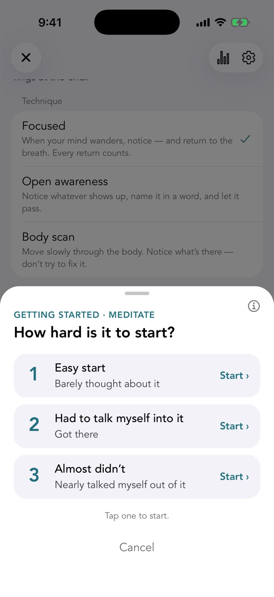

Mindset · Movement · Meals · and more
Exercise, healthy food, meditation… everyone knows what they should do, but most don't because it's easier not to. Neuro-Nudge is one app for the things you know you need to do but don't, and it strengthens the part of your brain that builds mental resilience: the ability to act when you'd rather not.
Download on theApp StoreFor iPhone. Android is on its way.
Introducing the Override
Before anything hard, your brain predicts the cost, and you feel it as resistance. Acting anyway is called an override. That voice telling you to take it easy shows up before you start and can return mid-session, so we track both.

One override, four places to use it
Each app in Neuro-Nudge is built around a moment you’d usually give in.
Lift, run or ride. Set a goal, work through phases, retest and watch your best lifts climb. Log sets in seconds.
Log a plate in seconds by food group. No calorie counting, no cheat days. One honest question a day: how hard was it to eat this way?
Timed sits, breath pacing and guided sessions. Track minutes, not mood, and notice the pull to quit before the timer does.
A to-do list for the things you keep dodging. Write it down, say how bad you expect it to be, then do it and rate how it really went. See that the dread was worse than the thing.